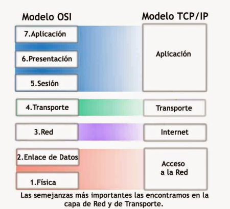

Introducción
El conjunto definido de estándares que las computadoras deben seguir para comunicarse correctamente se
llama protocolo.
Redes de computadoras es el nombre que hemos dado al alcance completo de cómo las
computadoras se comunican entre sí. Una red implica garantizar que las computadoras puedan escucharse entre
sí, que se comuniquen mediante protocolos que otras computadoras puedan entender, que repitan mensajes no
entregados en su totalidad y un par de cosas más, al igual que en la comunicación humana.
Para este curso, seleccionamos el modelo TCP/IP de cinco capas. También veremos brevemente el otro modelo de red
primaria, el modelo OSI, que tiene siete capas. En cada capa, un protocolo transporta a los de las capas
anteriores para mover los datos de un lugar a otro.
Piensa en el protocolo que se usa para mover datos de un extremo de un cable de red al otro. Es totalmente
diferente del protocolo que usas para mover datos de un lado del planeta al otro.
El modelo de red TCP / IP de cinco capas

• La capa física. Representa los dispositivos físicos que interconectan las
computadoras. Esto incluye las especificaciones para los cables de red y los conectores que unen
dispositivos, junto con especificaciones que describen cómo se envían las señales a través de estas
conexiones.
• La segunda capa en nuestro modelo se conoce como la capa de enlace de datos. Es responsable
de definir una manera común de interpretar estas señales para que los dispositivos de red puedan
comunicarse. Las normas de Ethernet también definen un protocolo que es responsable de llevar datos a nodos
en la misma red o enlace.
• A la tercera capa, la capa de red, a veces también se la llama la capa de Internet. Es esta
capa la que permite que diferentes redes se comuniquen entre sí a través de dispositivos conocidos como
routers. Un conjunto de redes conectadas entre sí a través de routers es una "interred". La interred más
famosa es Internet. La capa de red es responsable de entregar datos a través de un conjunto de redes. El
protocolo de uso más común en esta capa se conoce como IP o Protocolo de Internet.
• La cuarta capa, la capa de transporte dispone qué programas de cliente y servidor se
supone que reciben esos datos, los correos electrónicos terminan llegando a tu aplicación de correo
electrónico y las páginas web, a tu navegador web. Al protocolo más usado en la cuarta capa se lo conoce como
TCP o Protocolo de control de transmisión. Aunque a menudo se los mencione juntos, como "TCP/IP", para
comprender y solucionar cabalmente problemas de red, es importante saber que son protocolos completamente
diferentes y que sirven a diferentes propósitos. Otros protocolos de transferencia también usan IP para moverse,
incluido un protocolo conocido como UDP o Protocolo de datagramas de usuario. La gran diferencia entre los dos
es que TCP proporciona mecanismos para garantizar que los datos se entreguen de manera confiable mientras que
UDP, no.
• La quinta capa se conoce como la capa de aplicación. Los protocolos que se usan para
permitirte navegar por la web o enviar y recibir correos electrónicos son algunos de los más comunes.

• La capa física es el camión de reparto y las carreteras.
• La capa de enlace de datos es cómo los camiones de entrega van de una intersección a la siguiente, una y otra
vez.
• La capa de red identifica qué carreteras necesitan tomar para ir desde la dirección A a la dirección B.
• La capa de transporte asegura que el conductor de la entrega sepa cómo llamar a tu puerta para avisarte que tu
paquete llegó.
• Y la capa de aplicación es el contenido del paquete en sí.
Además del modelo de cinco capas con el que estamos trabajando, es importante tener en cuenta que existen otros
modelos. El modelo TCP / IP tradicional solo tiene cuatro capas, ya que no distingue entre la capa física y la
capa de enlace de datos, pero por lo demás es muy similar al que estaremos trabajando. El otro modelo más
conocido es el modelo OSI. La diferencia principal entre nuestro modelo de cinco capas y el modelo OSI de siete
capas es que el modelo OSI abstrae la capa de aplicación en tres capas en total.

https://es.wikipedia.org/wiki/Modelo_OSI
 Índice
Índice